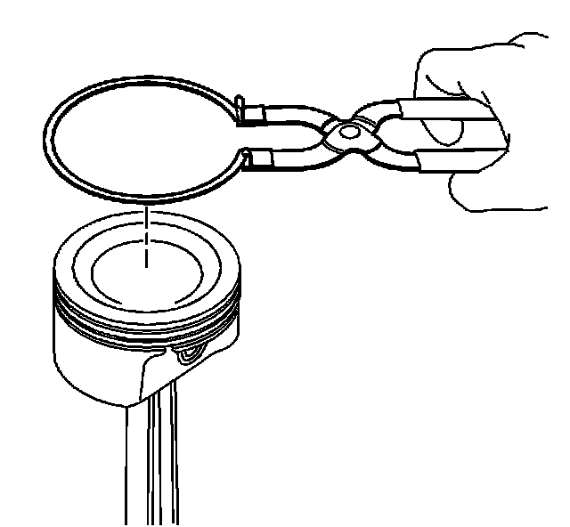
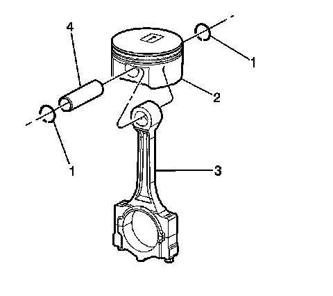

53. Piston and Connecting Rod Disassemble
Piston and Connecting Rod Disassemble
Tools Required
EN-46745 Piston Pin Clip Remover/Installer

Notice: You must use a piston ring expander to remove and install the piston rings. Only expand the rings far enough to fit over the piston lands. If the rings are overexpanded, the top ring will shatter and the others will distort.
1. Remove the piston rings using a piston ring expander. Place each ring in a clean shop towel for storage.

Important: Be careful not to nick or gouge the piston or the retaining ring groove with the screwdriver if the piston is to be reused.
2. Using the EN-46745 , pry out the piston pin retainers by using the removal access notch in the side of the piston.
3. Discard the old piston pin retainers.

4. Slide the piston pin (4) out of the piston. The piston will disconnect from the connecting rod (2).